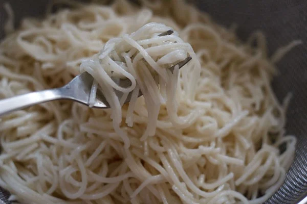
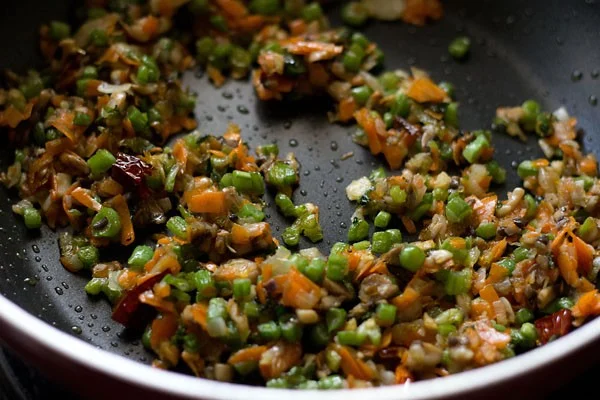
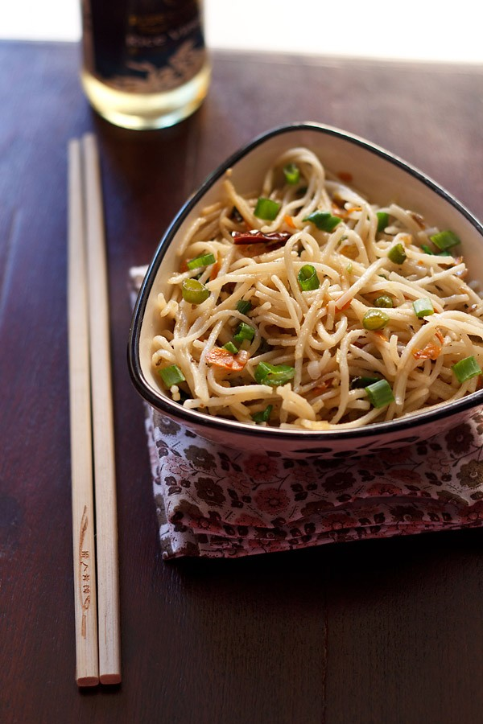

Hakka Noodles
This hakka noodles taste delicious and will have you craving for more. I am sharing a vegan recipe loaded with veggies and button mushrooms. Fairly easy to make hakka noodles is a popular Indo-Chinese dish of stir fried noodles. You will find it being made and served in many restaurants and street-side Chinese food joints in India. Hakka noodles is not only popular with kids, but also with grownups.

Ingredients
- cabbage (green or red)
- carrots
- french beans (green beans)
- zucchini
- broccoli
- button mushrooms or cremini mushrooms
- capsicum (bell pepper)
- spring onions (scallions) or regular onions
- Soy sauce
- Toasted sesame oil
- Herbs and spices
- Rice vinegar
Method
-
Prepare Veggies and Cook Noodles:
- First finely chop all the veggies and keep aside. You can even shred or grate the veggies using a food processor. I have used carrots, french beans, spring onions, button mushrooms, capsicum and cabbage
- Boil 4.5 cups water in a pot or pan with ½ teaspoon salt and a few drops of oil. Add the hakka noodles (200 grams).Cook the hakka noodles according to the package instructions. The noodles have to be cooked till al dente or just about cooked.Drain cooked noodles in a colander. Then rinse noodles with fresh water very well. This stops the cooking process and removes the starch.Add 1.5 teaspoon toasted sesame oil.
- Toss noodles well, so that the oil gets coated evenly on them. This gets rid of stickiness from them.
- 
-
Stir Fry Spices, Vegetables:
- Heat 2 tablespoons sunflower oil (or any neutral tasting oil) in a frying pan or wok. On a medium-low to medium heat, first sauté 2 to 3 dry red chilies (broken and seeds removed) and 1.5 teaspoon finely chopped garlic for about a minute. Increase the heat a bit and then add the 3 to 4 small spring onions (finely chopped), 8 to 10 french beans (finely chopped). Stir fry for about 3 minutes.
- Add the 4 to 5 button mushrooms (finely chopped), 1 small to medium carrot (finely chopped) and 1 teaspoon finely chopped celery and continue stir-frying.You can also add ½ cup finely chopped cabbage and 1 small to medium capsicum at this step. For the hakka noodles video in the post, cabbage is added.Stir fry for about 5 to 6 minutes till the edges of the veggies start to slightly brown. I like the veggies to be cooked more, than what is the norm usually for this recipe. You can cut down on the stir frying time, if you prefer half cooked or more crunchy veggies.Add 1.5 teaspoon soy sauce and mix well.
- 
-
Make Hakka Noodles:
- Add the cooked noodles. Mix, keep on tossing and stir-fry noodles for 1 to 2 minutes.Season with salt and crushed black pepper as per taste. Add ¼ teaspoon rice vinegar or white vinegar or rice wine.Toss well again and stir fry for a minute. Switch off the flame and add 1 to 2 tablespoons spring onion greens and mix well. Or you can garnish with spring onions while serving.
- Serve Hakka Noodles as it is or accompanied with an Indo Chinese dish like gobi manchurian or paneer manchurian or chilly mushroom or mushroom manchurian.
- 